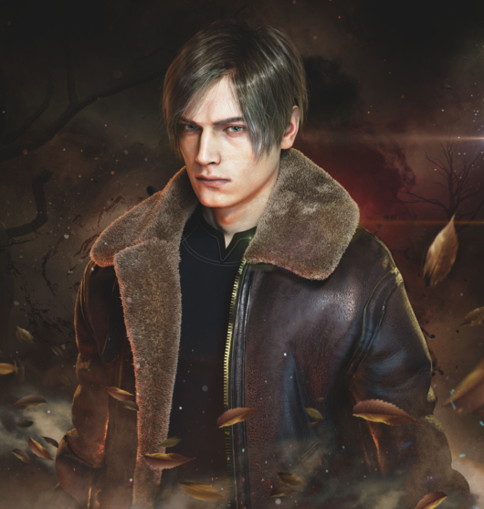
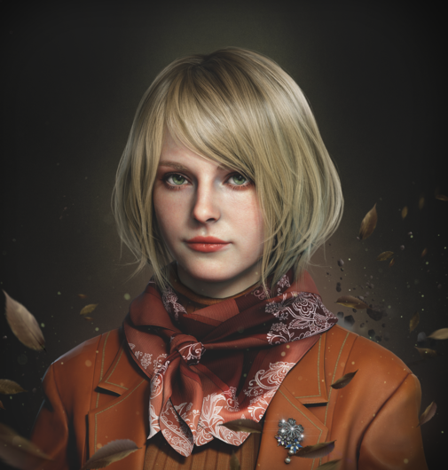
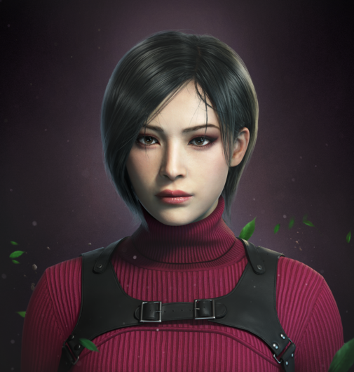
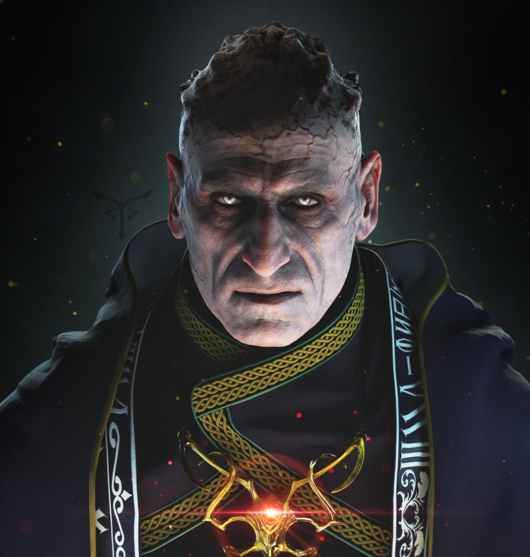
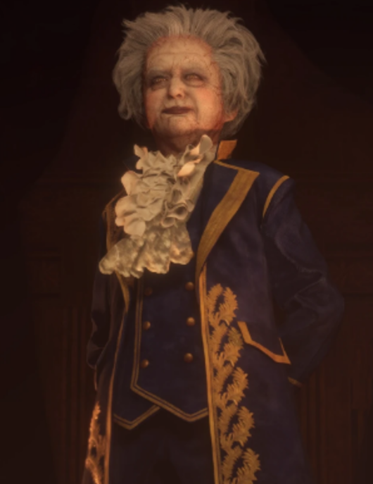
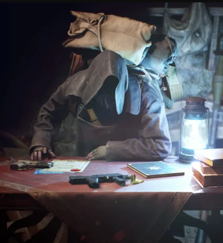
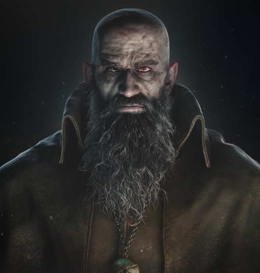
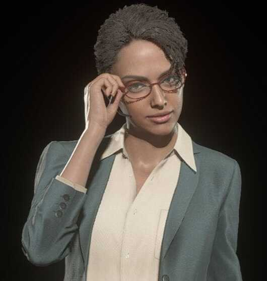
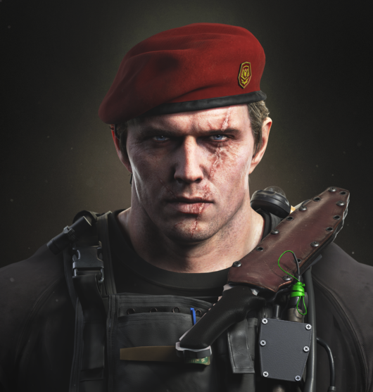
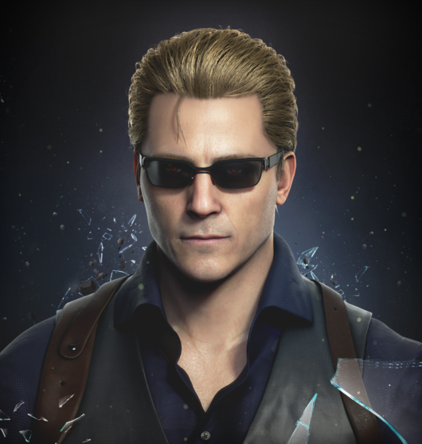

-
Leon Scott Kennedy
Descrição
Leon S. Kennedy é um agente do governo dos Estados Unidos, conhecido por sua coragem e habilidades excepcionais. No remake de Resident Evil 4, ele é enviado para resgatar Ashley Graham, a filha do presidente, sequestrada por um culto na Europa.
Aparência e Personalidade: Leon veste uma jaqueta de couro marrom, jeans e botas robustas, com um corte de cabelo curto e loiro. Ele é calmo, resoluto e tem um forte senso de dever, sempre determinado a proteger os inocentes.
Habilidades: Treinado em combate corpo a corpo e armas de fogo, Leon também é hábil em investigação e resolução de problemas, adaptando-se rapidamente a situações perigosas.
Missão: Durante sua missão, Leon enfrenta inimigos infectados por Las Plagas, lutando para desvendar os mistérios do culto e garantir a segurança de Ashley. -
Ashley Graham
Descrição
Ashley Graham é a filha do presidente dos Estados Unidos e desempenha um papel central na trama de Resident Evil 4. No remake, ela é sequestrada por um culto misterioso na Europa, levando Leon S. Kennedy a ser enviado em uma missão de resgate.
Aparência e Personalidade: Ashley é uma jovem de aparência delicada, com cabelos loiros e olhos claros. Ela veste roupas casuais adequadas para uma estudante universitária. Apesar de sua situação angustiante, Ashley mostra coragem e resiliência, colaborando com Leon para escapar dos perigos que enfrentam.
Habilidades: Embora não tenha treinamento em combate, Ashley se mostra útil em várias situações, ajudando Leon a resolver puzzles e abrir caminhos bloqueados. Sua sobrevivência depende da proteção e orientação de Leon.
Papel na Missão: A principal missão de Leon é garantir a segurança de Ashley e levá-la de volta aos Estados Unidos. Durante a jornada, ela enfrenta diversos perigos, incluindo os infectados por Las Plagas, e desenvolve uma relação de confiança com Leon enquanto lutam juntos para sobreviver. -
Ada Wong
Descrição
Ada Wong é uma espiã misteriosa e habilidosa, que desempenha um papel complexo na trama de Resident Evil 4. Ela opera independentemente, mas seus objetivos frequentemente se cruzam com os de Leon S. Kennedy.
Aparência e Personalidade: Ada é conhecida por seu visual elegante e distintivo, frequentemente vestindo um vestido vermelho e usando armas sofisticadas. Ela possui um ar de mistério e confiança, mantendo suas verdadeiras intenções e lealdades bem guardadas. Ada é inteligente, calculista e sedutora, usando seu charme para manipular situações a seu favor.
Habilidades: Ada é altamente treinada em combate, espionagem e infiltração. Ela é experiente no uso de uma variedade de armas e dispositivos tecnológicos, além de ser ágil e letal em combate corpo a corpo.
Papel na Missão: No remake, Ada ajuda e interfere na missão de Leon em vários momentos, fornecendo informações cruciais e auxílio, mas sempre mantendo seus próprios objetivos em segredo. Sua presença adiciona uma camada de intriga e complexidade à narrativa, deixando Leon e os jogadores incertos sobre suas verdadeiras intenções. -
Luis Serra

Descrição
Luis Serra é um personagem carismático e complexo em Resident Evil 4. Ele é um ex-pesquisador que desempenha um papel crucial na trama do jogo, oferecendo ajuda e informações valiosas a Leon S. Kennedy.
Aparência e Personalidade: Luis é um homem de aparência descontraída, com cabelos castanhos e um estilo de roupa casual. Ele é charmoso, espirituoso e muitas vezes faz piadas, mesmo em situações perigosas. Apesar de seu comportamento despreocupado, ele é inteligente e determinado.
Histórico: Luis trabalhou anteriormente como pesquisador para a Umbrella Corporation e tem conhecimento profundo sobre as bioarmas e a infecção Las Plagas. Seu arrependimento por suas ações passadas e seu desejo de fazer o bem impulsionam suas ações durante o jogo.
Habilidades: Luis é altamente conhecedor de biotecnologia e é um excelente atirador. Sua experiência como pesquisador lhe permite fornecer informações críticas sobre os inimigos que Leon enfrenta e desenvolver soluções para combatê-los.
Papel na Missão: No remake, Luis auxilia Leon ao longo de sua missão, compartilhando seu conhecimento sobre Las Plagas e ajudando a enfrentar os infectados. Sua cooperação é essencial para o progresso de Leon, e ele desempenha um papel fundamental na luta contra o culto responsável pelo sequestro de Ashley. -
OSMUND SADDLER
Descrição
Osmund Saddler é o principal antagonista de Resident Evil 4 e o líder do culto Los Illuminados. Ele é a mente por trás do sequestro de Ashley Graham e dos eventos que Leon S. Kennedy deve enfrentar.
Aparência e Personalidade: Saddler é um homem de aparência imponente, frequentemente vestido com roupas cerimoniais que refletem sua posição de líder do culto. Ele exala uma presença ameaçadora e autoritária, manipulando seus seguidores com carisma e controle absoluto. Saddler é cruel, calculista e determinado a alcançar seus objetivos a qualquer custo.
Histórico: Como líder de Los Illuminados, Saddler descobriu e explorou a bioarma conhecida como Las Plagas, usando-a para controlar seus seguidores e expandir sua influência. Seu objetivo é usar Ashley Graham como um meio de infiltrar e dominar o governo dos Estados Unidos.
Habilidades: Saddler possui habilidades sobre-humanas graças à infecção por Las Plagas, permitindo-lhe controlar os infectados e manipular seu próprio corpo de maneiras aterrorizantes. Ele é um adversário formidável, tanto em combate quanto em manipulação psicológica.
Papel na Missão: No remake, Saddler é o principal obstáculo que Leon deve enfrentar para resgatar Ashley e impedir que o culto realize seus planos nefastos. Sua presença constante e influência sobre os eventos criam uma atmosfera de tensão e perigo ao longo de toda a missão de Leon. -
RAMON SALAZAR
Descrição
Ramon Salazar é um dos principais antagonistas de Resident Evil 4, servindo como o castelão do castelo onde grande parte do jogo se desenrola. Ele é um membro devoto do culto Los Illuminados e um subordinado de Osmund Saddler.
Aparência e Personalidade: Salazar tem uma aparência distintiva e anômala. Ele é um homem pequeno, quase infantil, de pele pálida e cabelo branco, frequentemente vestido com trajes nobres e extravagantes, que refletem sua posição de poder. Apesar de sua aparência frágil, Salazar é cruel, arrogante e profundamente leal ao culto.
Histórico: Salazar provém de uma família nobre com uma longa história de administração do castelo. Sua família foi corrompida por Los Illuminados, e Salazar, em sua devoção ao culto, permitiu que Las Plagas prosperassem em seu domínio. Ele usa seu poder e recursos para apoiar os planos de Saddler e o culto.
Habilidades: Embora não seja fisicamente forte, Salazar possui habilidades derivadas de Las Plagas, que ele utiliza para comandar hordas de infectados e criar armadilhas mortais dentro de seu castelo. Ele também se funde com uma criatura monstruosa durante a batalha contra Leon, demonstrando a extensão de sua corrupção pelas Plagas.
Papel na Missão: No remake, Salazar é um dos principais adversários que Leon deve enfrentar. Ele cria inúmeros obstáculos e desafios dentro do castelo, tentando impedir Leon de resgatar Ashley Graham e frustrar os planos de Los Illuminados. Sua presença adiciona um elemento de horror e dificuldade à missão de Leon. -
MERCADOR
Descrição
Figura misteriosa presente durante toda a aventura. O Mercador oferece itens, armas e melhoras para Leon em troca de tesouros e pesetas, a moeda local.
-
BITORES MENDEZ
Descrição
O chefe da vila que Leon investiga. Assim como os outros habitantes locais, ele venera o líder de um culto misterioso. Extremamente alto e forte, exerce certa autoridade entre os aldeões daquela região.
-
INGRID HUNNIGAN
Descrição
Uma coordenadora de missões que dá suporte aos agentes do governo dos Estados Unidos. Ela será o único contato externo de Leon, repassando informações via rádio.
-
JACK KRAUSER
Descrição
Um ex-membro e capitão das forças militares dos Estados Unidos. Ele e Leon desenvolveram um vínculo após este se tornar um agente, e os dois tomaram rumos diferentes após seu sumiço no fim da missão conhecida por Operação: Javier.
-
ALBERT WESKER
Descrição
Sobrevivente do incidente da Mansão Spencer e Ilha Rockfort. Escondido nas sombras, Albert Wesker está em busca das Plagas existentes na pequena vila. Wesker utiliza vários agentes para obter êxito em sua missão, entre eles os agentes Wong e Krauser.